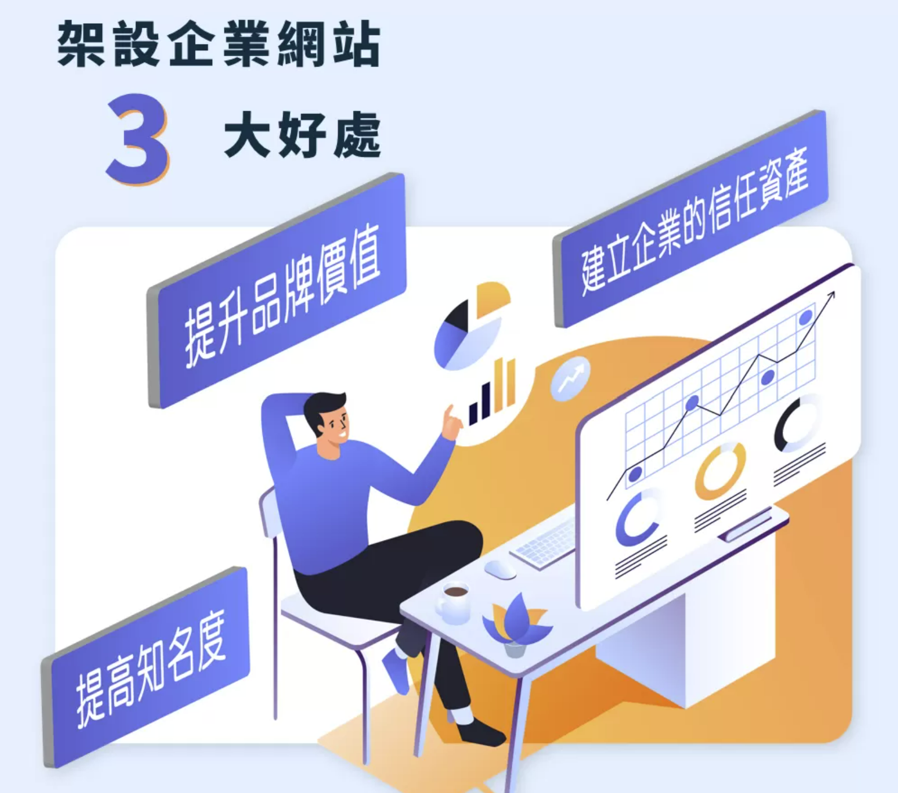
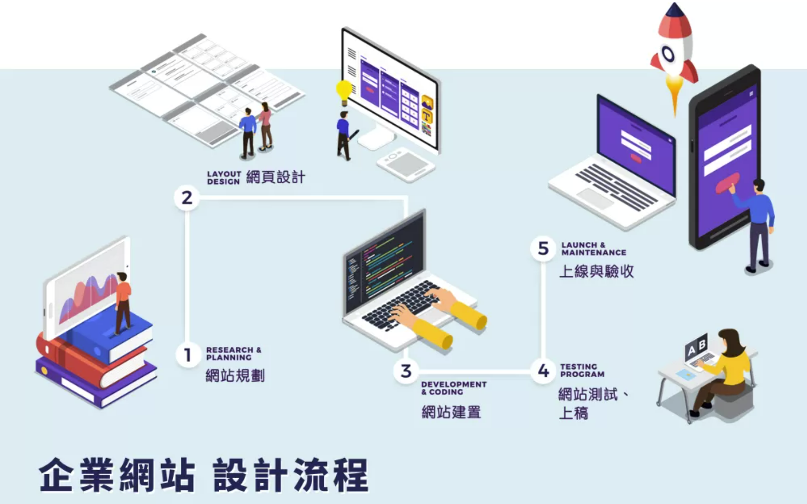

How to design a good corporate website to help improve corporate brand value?
The enterprise website is the facade of the enterprise in the online world, and a good enterprise website design can build the trust of consumers for you, improve the charm of the brand and bring more business opportunities. Today I will tell you how to design a good corporate website and work cases, as well as the points that need attention!
Table of contents

Why set up a corporate website? 3 major benefits tell you
With the advent of the digital age, more and more people know that setting up a website is helpful for brand promotion, but what you know is what you know. Do you understand the real reason? How does the corporate website specifically help you achieve the purpose of promotion? Let me help you analyze them one by one.
1. Enhance brand value
Brand value is the core of enterprise management, and the existence of a corporate image website is a manifestation of brand value. Through the revision of the website, the brand image can be refreshed at the fastest speed, and the difference from competitors can be highlighted. Therefore, Many listed companies often reform their corporate websites before announcing major reforms, in order to enhance the brand value of the company in exchange for more results.
2. Building trust assets for the business
'Consumer trust' is an important asset of a company. Therefore, the corporate website is not only used to provide a visual corporate image, but also must have open and transparent corporate information, such as: corporate background (company profile), business scope (products/ Services), latest news, contact information, etc., as the first step in building corporate trust assets; and adding information such as corporate social responsibility, human resource policies, and investment relations can also demonstrate the scale and vision of the company, which is a step closer deepen consumer trust.
3. Increase visibility
A corporate website is like an advertisement that will never be removed from the shelves. As long as the webpage content planning and SEO optimization are done well, there is a chance to increase the exposure of the website, and if valuable webpage content can be shared through the community, it will be more popular Let the company's popularity gradually expand to the outside world!
5 Considerations for Enterprise Website Design
It can be seen that for a successful enterprise, a good corporate website is an indispensable element, so how should the corporate website be designed and erected? There are 5 major considerations:
1. Visual design︱Simple and clear is the most appropriate
A website with a variety of eye-catching special effects may be refreshing, but it may be accompanied by a slow webpage loading speed, which makes users wonder for a while, followed by a long wait; or It is because the website is too fancy, so that visitors cannot find the information they need, which in turn increases the bounce rate of the website. Therefore, a web design that allows visitors to understand and find information can be called a successful corporate website and bring you a steady stream of business.
2. Architecture design︱Clear planning is very important
From the website structure table, we can see the positioning of the website, which is the most important document in the early stage of enterprise website construction. The website architecture of different industries will also be different, so submitting a website architecture with clear goals can make Google and visitors have a correct understanding of your website.
3. Home page design︱Remember to highlight advantages
The homepage of the website is the network entrance of the enterprise. If there are no clear guidelines and attractive advantages at the entrance, it may be difficult for people to 'walk in'. Therefore, I believe that a successful corporate website homepage must combine the AIDA law of consumer behavior, through the website's visual image (cognition), product and service categories (interest), corporate advantages and core capabilities (desire), clear and clear The contact method (action) and the smooth guiding of the moving line can successfully increase the website traffic and promote the conversion of potential customers.
4. Product information ︱ eye-catching and easy to find, pay attention
Do you research online before buying something? In this era of information explosion, most people will have this habit, so the product page planning of the enterprise website is even more important. In addition to the source code of the webpage following the T/D/H structure of Google search, factors such as the classification and content of product information, and whether it is included in the 'full-site search' are also one of the key points of construction.
5. Technology update︱Update at any time is the key point
In addition to the visual planning of the front desk of the website that you can see, the technical update of the webpage is also very important, such as: RWD responsive web design, https secure connection, CMS background management system, and SEO, which is the key to web search, etc. The latest technologies are all updated projects in recent years. Only by keeping up with the changes in the world can you ensure that your website does not fall behind!
Enterprise website design process
Seeing this, do you also feel a headache? There are so many 'brows and eyebrows' in setting up a corporate website, where should I start? Don't worry, I not only pay attention to the quality of the web design process, but also the results after the web page is completed. I provide you with the following considerate service process:

1. Website planning
After receiving the website demand inquiry, we will conduct a telephone interview first, and provide a plan and quotation one week after the interview, and sign the contract after the discussion is finalized.
2. Web design
Gather customer needs and start planning from the home page. We will first provide a draft proposal and discuss and communicate with customers, and then make a design draft after confirmation, and design each inner page after the home page is completed to ensure a consistent website style.
3. Website construction
Including front-end web page layout (html+CSS), CMS back-end system integration, database and program function construction.
4. Website testing and submission
Repeatedly test and fine-tune the website. After confirming that it is correct, it can be transferred to the official host and officially launched.
5. Launch and acceptance
After transferring to the official host, the whole case acceptance and background operation education and training will be carried out to complete the complete website building service.
The whole process is time-consuming and depends on the size of the project. During the process, I will repeatedly discuss and confirm with the customer, because I believe that only careful service can create a unique and high-quality corporate website together with the customer. If you are looking for If you are looking for a suitable web design company, then feel free to entrust me with the design, and contact me now! Email Me